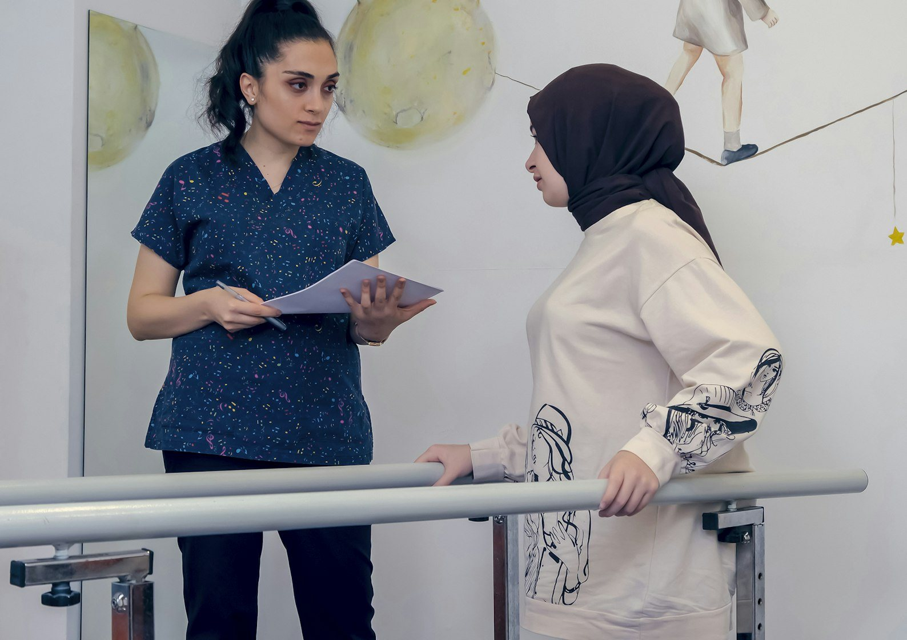

Lun a vie · 08:00 a 20:00
vuelve a moverte
Kinesiología

- Lesiones, esguinces y postoperatorio
- Dolor lumbar y cervical
- Kinesiología respiratoria
- Persona mayor y prevención de caídas
Agenda tu hora
+56 9 4293 4776
Villagrán 199, Santa Juana